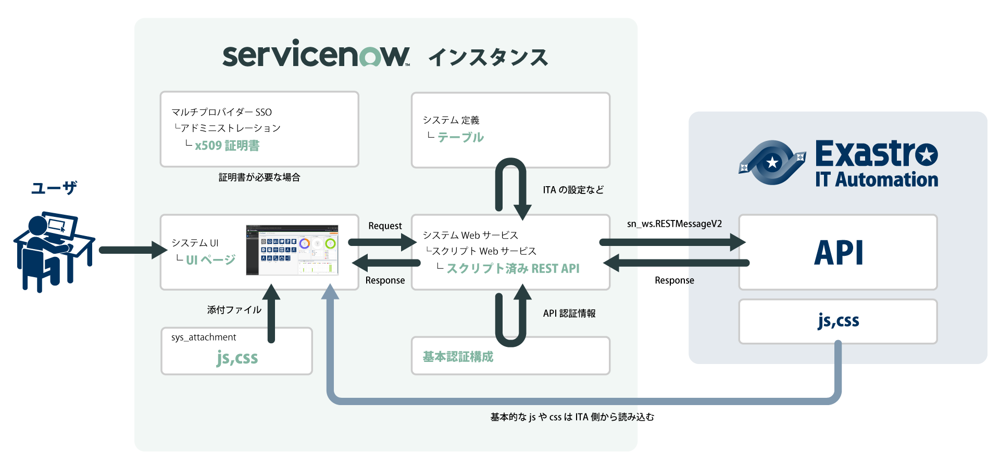
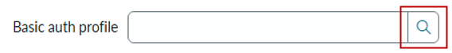
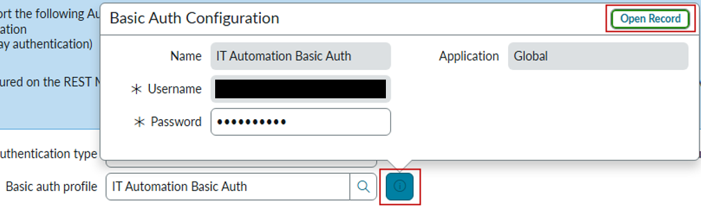
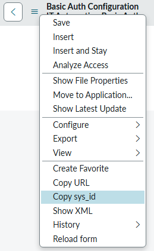
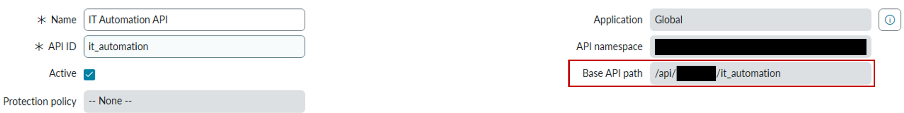
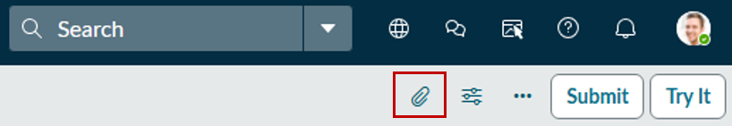
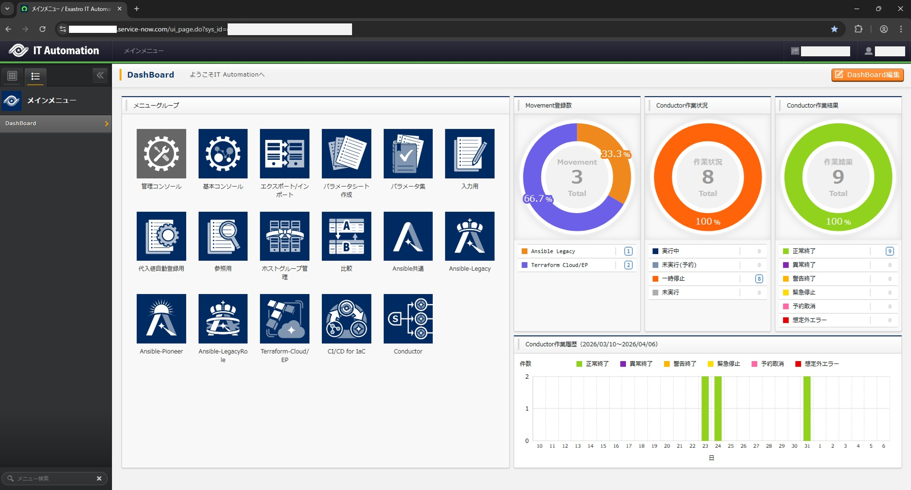

ServiceNow UI Pageを用いたIT Automation画面の実装手順¶
はじめに¶
条件¶
バージョン¶
- IT Automationのバージョン: 2.6.2
- ServiceNowインスタンスのバージョン: Zurich
接続要件および事前確認事項¶
- ServiceNowインスタンスからIT AutomationサーバへのHTTPS通信が許可されていること
- IT AutomationのAPIエンドポイントに到達可能であること
- 必要に応じてプロキシ設定が正しく構成されていること
- IT Automation側で認証（Basic認証）が有効であること
概要図¶

実装手順¶
①資材ダウンロード¶
②基本認証構成登録¶
- ヘッダーメニューのAllから「System Web Services / Outbound / REST message」にアクセス
- NEWボタンから新規作成
Name
IT Automation REST Message
Accessible from
This application scope only
Endpoint
- Authenticationの設定
Authentication type
Basic
- Basic auth profileを追加（サーチアイコンを押下）

- 新しいWindowが開くのでNEWボタンから新規作成
Name
IT Automation Basic Auth
Username
{{ IT AutomatinのログインID }}
Password
{{ IT Automationのログインパスワード }}
- SubmitボタンでBasic Authを登録
- REST Message画面に戻り、SubmitボタンでREST Messageを登録
- 一覧に戻るので、登録したIT Automation REST Messageを開く
- インフォアイコンからOpen Recordボタンを押下

- 登録したBasic Authのレコードが開くので、左上のメニューからCopy sys_idで参照に必要なIDを控えておく

IT AutomationのAPIエンドポイントに到達可能かテスト¶
- 登録したIT Automation REST Messageを開く
- HTTP Methodsに登録してあるDefault GETを開く
- Endpointにユーザの情報を取得するエンドポイントを設定
Endpoint
{{ IT Automation URL }}/api/{{ オーガナイゼーションID }}/workspaces/{{ ワークスペースID }}/ita/user/
- Updateボタンで更新
- ページが戻るので、再度Default GETを開く
- Updateボタンの下にあるRelated LinksのTestを押下
- 正常ならHTTP statusが200でResponseに結果が返却される
③スクリプト済み REST API設定¶
- ヘッダーメニューのAllから「System Web Services / Scripted Web Services / Scripted REST APIs」にアクセス
- NEWボタンから新規作成
Name
IT Automation API
API ID
it_automation
- Securityの設定
Default ACLs
Scripted REST External Default
- Submitボタンで登録
- 一覧に戻るので、登録したIT Automation APIを開く
- 後の項目で必要なBase API pathを控えておく

- ResourcesのNEWボタンからリソースを新規作成
Name
dispatch
HTTP method
POST
Relative path
/dispatch
Script
{{ ①でダウンロードした資材から「scripted_rest_api.js」の内容を張り付ける }}
- Submitボタンでリソースを登録
注釈
④テーブル設定¶
IT Automationの接続情報を登録するテーブルの作成¶
- ヘッダーメニューのAllから「System Definition / Tables」にアクセス
- NEWボタンからテーブルを新規作成
Label
IT Automation Config
Name
u_it_automation_config
- ColumnsのInsert a new row...から必要な項目を追加（※Max lengthは適宜調整してください）
Column label
Type
Max length
User Name
String
64
IT Automation URL
String
256
Web Assets URL
String
256
Organization ID
String
64
Workspace ID
String
64
Basic Auth Sys ID
String
32
Base API path
String
32
- Submitボタンでテーブルを登録
- ヘッダーメニューのAllから登録した「IT Automation Config / IT Automation Configs」にアクセス
- NEWボタンからIT Automation接続情報を新規作成
Basic Auth Sys ID
{{ ①基本認証構成で設定したsys_id }}
Web Assets URL
{{ IT AutomationのURL }} ※末尾にスラッシュは含めない
IT Automation URL
{{ IT AutomationのURL }} ※末尾にスラッシュは含めない
Base API path
{{ ③スクリプト済み REST API設定で設定したBase API path }}
User Name
{{ ServiceNowインスタンスのログインID }}
Organization ID
{{ IT AutomationのオーガナイゼーションID }}
Workspace ID
{{ IT AutomationのワークスペースID }}
- SubmitボタンでIT Automation接続情報を登録
IT Automationとのファイルのやり取りで使用するテーブルの作成¶
- ヘッダーメニューのAllから「System Definition / Tables」にアクセス
- NEWボタンからテーブルを新規作成
Label
IT Automation Temp File
Name
u_it_automation_temp_file
- Submitボタンでテーブルを登録（列の追加は必要ありません）
- ヘッダーメニューのAllから「System Definition / Table Rotations」にアクセス
- NEWボタンからテーブルローテーションを新規作成（※クリアする期間などは適宜調整してください）
Name
u_it_automation_temp_file
Type
Rotation
Rotations
1
Duration
Days 1
- Submitボタンでテーブルローテーションを登録
⑤UIページ設定¶
- ヘッダーメニューのAllから「System UI/ UI Pages」にアクセス
- NEWボタンからUIページを新規作成
Name
IT Automation UI Page
HTML
{{ ①でダウンロードした資材から「ui_page.html」の内容を張り付ける }}
Client script
{{ ①でダウンロードした資材から「ui_page.js」の内容を張り付ける }}
- クリップアイコンを押下

- ①でダウンロードした資材から下記をAttachmentsに追加する
snow_patch.js
snow_patch.css
snow_create_menu.js
snow_dashboard_widget.js
snow_table_worker.js
messageid_ja.js
- Attachmentsに追加したファイル名を右クリック「リンクのアドレスをコピー」でURLをコピーし下記の/sys_attachment.do?sys_id=********の部分を対応したファイルと入れ替えるHTML 9～12行目:
createMenu: '/sys_attachment.do?sys_id=********',
snow_create_menu.js
tableWorker: '/sys_attachment.do?sys_id=********',
snow_table_worker.js
widget: '/sys_attachment.do?sys_id=********',
snow_dashboard_widget.js
ja: '/sys_attachment.do?sys_id=********'
messageid_ja.js
HTML 17～18行目:var patch = '/sys_attachment.do?sys_id=********';
snow_patch.js
var cssSysAtt = '/sys_attachment.do?sys_id=********';
snow_patch.css
- Submitボタンを押下
- Roleの選択が出てくるので「admin」を選択
- {{ Instance URL }}ui_page.do?sys_id={{ 作成したUI PageのSys ID }}でページを開く

注釈
注釈
注釈
制限事項¶
- ServiceNowのREST Message（sn_ws.RESTMessageV2）では、リクエストおよびレスポンスで扱えるデータサイズに制限があり、最大約10MBまでとなります。この制限を超えるデータを送受信した場合、エラーの発生などにより正常に処理できない可能性があります。また、ファイルの送信においては、multipart/form-dataには対応していないため、バイナリデータはBase64形式に変換して送信されます。その際、データサイズは約1.3倍となるため、実際に扱えるファイルサイズはこれを考慮する必要があります。